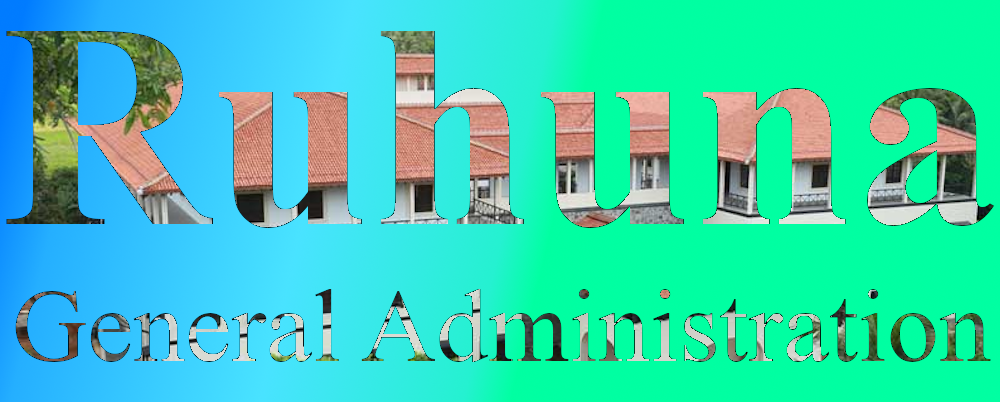

About Us

The General Administrative Division of the University of Ruhuna is facilitating the curriculums conducted by all the complexes of the university. This division is obliged to give their service through out the university with a staff of 7 members . All the members of the division is well occupied and dedicated for the service they provide. The division itself provide the facilities to uplift the quality of the university by taking part in some other activities such as maintaining buildings, cutting trees in the university complexes, granting vehicle passes and providing posting facilities as well.